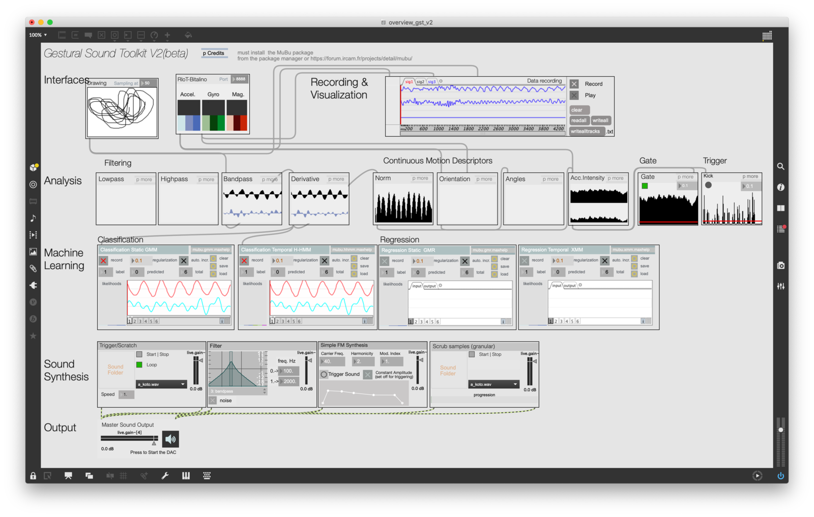
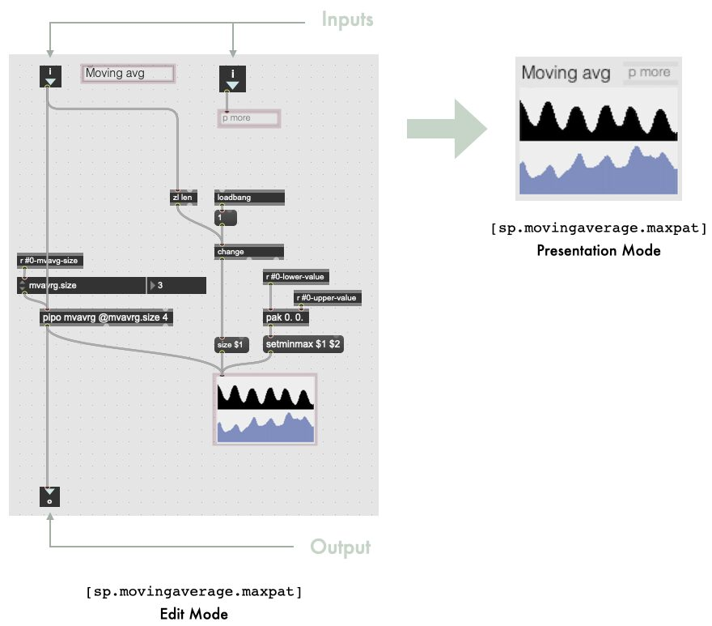

Gestural Sound Toolkit: Reflections on an Interactive Design Project
Abstract
The NIME and HCI domains have seen the emergence of several tools for designing expressive gestural interactions with sounds. Each tool has its own specificity, such as high versatility through low-level APIs, or inclusion of non-expert users through high-level components and demonstration-based design workflows. In this short paper, we present a toolkit, called Gestural Sound Toolkit (GST), that we have been using for the past nine years in research projects and teaching. We describe this toolkit and the design process that led to its current status. Our goal is to reflect on the decisions made, and to highlight the factors of these decisions, or their arbitrariness. In doing so, we hope to provide insights for the development of tools for designing gestural interaction with sound.
Author Keywords
Qualitative Methods, Sound Design, Gesture Design, Machine Learning
CCS Concepts
•Applied computing → Sound and music computing; Performing arts; •Information systems → Music retrieval;
Introduction
Interacting expressively with sounds through body movements has been one of the core research topics at NIME, whether for the creation of musical instruments, for pedagogical purposes or for scientific research. Over the years, the NIME community, as well as the Sonic Interaction Design (SID) and Human-Computer Interaction (HCI) communities, have created tools dedicated to the design of gesture-sound interactions. However, offering versatility while including non-programmers users remains a challenge. In addition, we observe that the underlying design process of these tools has generally been less explicit, especially in terms of identifying the factors that have steered certain design choices and the critical discourse that can be established on top of them.
Gestural interaction with sound can be understood as the computer-mediated relationships between gestures (or, more generally, body movements) and synthesized sounds. Among the motivations underlying the research on gestural interaction with sounds, there is the desire to integrate the human ability to use gestures to interact with the environment (tool and object manipulations), with applications including music [1] and movement rehabilitation [2]. Designing such interactions involves a wide range of concepts, including the theoretical knowledge on gesture-sound relationships in a musical context [3], the choice of the low-level mappings between both gesture and sound computational representations [4], the creation of design support tools [5], or the evaluation methods to be used [6].
To help designers in this process, one research endeavor has focused on proposing tools that support the design of these interactions, for a wide range of user profiles. We observe, however, that often the design process that has led to the creation of these tools is absent from their introduction to the community. We believe that to build better tools for designing gestural interactions with sounds, we need to make the decision process behind their development more explicit, as well as the presentation of their capabilities.
In this paper, we present a design tool, called Gestural Sound Toolkit (GST), developed for supporting designers in creating gestural interactions with sounds, primarily in sonic interaction design. We take a stand in exposing the design process of the tool, along with its features. Our goal is to reflect on the decisions made, and shed light on factors of these decisions, or their arbitrariness.
The paper is structured as follows. First we report previous work in tools and toolkits for gestural interaction with sounds, as well as design methodologies. Then we present the genesis of the project, in particular the initial design and implementation choices made. We further present the way the tool has slowly changed since and its current use. Finally we discuss the implications for NIME design.
Related Work
Tools and Toolkits for Interacting with Sounds
There have been several tools and toolkits proposed in order to support the design of gestural interaction with sounds. One approach relies on Machine Learning-based methods in order to learn gesture-sound mappings from few examples. This approach allows personalization, enhances exploration, and enables rapid prototyping. Fiebrink et al. proposed Wekinator [7], a Java-based software that accepts generic inputs and outputs. Initial examples were using the Chuck sound synthesis engine. The tool is not fully configurable beyond the choices of input and output, and the model used. Gillian proposed a lower level API for gesture-based interaction with application in music [5]. Written in C language, this toolkit however requires technical programming skills. In the same line of research, web-based toolkits have been proposed for rapid prototyping, involving machine learning modules, sound synthesis modules as well gesture analysis modules. Examples of such toolkits are RapidMix [8] and CoMo [9]. Similarly, these require technical knowledge in web development.
Other toolkits rely on graphical programming environment, generally mixing machine learning and direct mapping approaches. MuBu [10] is a set of MaxMSP objects that allows for handling gesture inputs (with analysis modules), recordings, sound synthesis. It also includes machine learning method for temporal gesture-sound mappings, such as the XMM [11] and GVF [12] libraries. This tool remains dedicated to experts in Max/MSP. With a specific focus on mapping, Libmapper [13] is a tool that allows musical instrument designers to visually map inputs (from gesture sensors for instance) to outputs (e.g. sound synthesis parameters). However, libmapper lacks versatility in terms of interaction design. Finally, although not dedicated to sound control, another graphical programming toolkit called InteractML [14] has been developed in Unity to design gesture-based interaction in virtual reality.
Design Methodologies
In both NIME and HCI, researchers have proposed several design methodologies for interactive systems, which allow for a better fit with the application context, a better understanding of its end users and its integration in certain communities of practice. As examples, in User-Centered Design (UCD) and participatory design, the user is involved early in the design process, for instance during the ideation phase that lays the basis of the future system [15]. In this context, focus groups may help to confront views about a given system. Another approach, based on technology probes [16], allows for testing early prototypes (or pre-prototypes) with end users, as well as generating knowledge about the way a system may change users' practice. Technology probes encourage tight cycles between design and use. The technology probe approach is based on cultural probes proposed by Gaver and colleagues [17], which are a set of tangible devices and objects made to trigger inspirational responses from people in a given context. These responses will then be used to guide the design of a given system that is aimed to be deployed in the same context. Such approach has inspired a recent practice called research through design, where design practice is used in contextualized situations leading to artifacts and systems that generate conceptual, theoretical, and procedural insights [18][19]. This approach brings to bear on reflections about the system itself, its interactions with the environment, and the process itself. Research through design can bring many forms such as auto-ethnographic approach where the designer-researcher reflects on their own designs.
In this paper, we propose to reflect on the design of a toolkit that we built in 2013, through its use since then. This inquiry is made to highlight the factors that have steered the design of the toolkit.
Gestural Sound Toolkit
In this section we present the Gestural Sound Toolkit (GST). A screenshot of some of the modules of the toolkit is depicted in Figure 1. The toolkit is available online (link omitted for submission).


Figure 1. Screenshot of some of the toolkit modules in MaxMSP. The toolkit is comprised of four types of modules: Receiver modules, Preprocessing and Analysis modules, Machine Learning modules and Sound Synthesis modules. Modules are connected through wires allowing for immediate feedback from users' actions.
Presentation
GST is designed to build gestural interactions with sounds, using ML methods for gesture recognition, gesture following, or gesture-sound mapping among other applications. The toolkit is built on the notion of high-level modules handling specific operations. The toolkit is comprised of four types of modules:
Receiver modules receive motion data from the sensing hardware. In the interface, a module for R-IoT and bitalino is presented. Other modules exist to get data from the Leapmotion, the Myo, or generic OSC input streams.
Preprocessing and Analysis modules analyze and process gesture data. A Filter module can be used to reduce noise. The Energy module extracts gestural energy from the incoming signal. Velocity is calculated by computing the derivative. Some modules are specific to inertial sensors, as the most used hardware in our work with the toolkit.
Machine Learning modules perform gesture recognition and regression. Classification can be static (for posture recognition) or temporal (for gesture following and real-time time warping). Similarly, regression can be static or temporal.
Synthesis modules allow prerecorded sounds to be played and manipulated. The toolkit integrates temporal modulation (scrubbing). A trigger module allows for triggering a sound from a sound bank. A manipulation module allows sound to be sculpted and modified live as movement is performed.
Implementation
The toolkit is implemented in the Max/MSP visual programming environment and is based on the MuBu library [10]. Each module is a patcher that typically accepts inputs and has outputs. The use of Max/MSP allows users to build interactive scenarios by pulling cords from one module to another, which, in turn, provides immediate feedback from users' actions. The toolkit relies on the MuBu library that provides the necessary low-level operations for signal processing and sound synthesis.


Figure 2. Design of GST modules. Each module is patch that is used in presentation mode. Here we depict the example of a moving average module. On the left, we show the patch in edition mode (or implementation phase). On the right we show how it looks like for the user in presentation mode.
As an example, Figure 2 depicts the moving average module, called [sp.movingaverage.maxpat]. On the left, the patcher is shown in edit (or implementation) mode. It has two inputs and one output. In between, the patcher implements a moving average filter using some components from the MuBu library. Elements of the patch highlighted in pink are the ones remaining in the interface, depicted on the right of the Figure. The patcher opens in presentation mode by default (right of Figure 2). Each module is independent from other modules. Therefore, extending the toolkit is made easy. One can create an arbitrary patchers and can follow the guidelines for its look in presentation mode, which defines its interface.
Building a Tool that can be Used by Designers
In this section, we present the genesis of the toolkit. We report the context in which it has been built and the motivations steering its design. We discuss in particular some of the initial design decisions.
Design Genesis
GST was initially developed as part of a research project in 2013. In this project we were organizing workshops with designers in which they were guided in the design of embodied interaction with sounds. The detailed of these workshops can be found in [anonymous].
In this series of workshops, we developed a specific methodology where participants were guided through the design and the implementation of an interactive scenario involving gesture control of sound synthesis. In the methodology, participants were invited to start from the sound (the feedback), as opposed to start from the gesture (the input). The motivation behind this choice is to allow designers to be led by sonic affordances, that is to say the way sounds may involve associated actions and body movements [20], in the design of the interactive scenario. This was the ideation phase, which was followed by a realization phase where participants used the GST to implement their scenarios, after a quick tutorial to help them handle the tool.
The motivation behind the design of the toolkit was to provide designers with a tool that allows them to realize their own project, some of them unrealistic, involving gesture-based interaction with sound. Our objective was to build a tool that includes designers with no programming experience, while enabling versatility, which means that designers have to not feel limited in the scope of projects they would like to develop.
Design decisions
The first iteration of the toolkit was thought to integrate both hardware and software, as explained in [anonymous]. Regarding the hardware, we used inertial sensors whose form factor did not recall any sensing tools, such as Wiimote, Leapmotion, cameras or mobile phones. Although we kept using primarily inertial sensors that can be worn or embedded in objects, the toolkit eventually supports more types of input sensors, beyond the original inertial sensors used in the workshops. The initial aim at providing a hardware/software toolkit did not stand, but the toolkit still affords the use of inertial sensors in comparison to other types of inputs.
As explained above, sound-first design was central to the workshop, therefore we needed to build a tool that allowed for manipulating recorded sounds. During the workshops, we invited participants to download sounds from a website (typically using the Freesound database1), or to record their own sounds. At this point, we knew that Max/MSP includes many off-the-shelf tools for manipulating recorded sounds that we could use, such as the MuBu library. Second we needed a tool that can be used by designers without notion of programming. This discarded low-level programming toolkits such as GRT or RapidMix, which would require participant to code in C or JavaScript. Therefore, we opted for building the toolkit in Max/MSP in order to rely on its graphical programming. Moreover, it offers a large set of mapping approaches, where both machine learning and non-machine learning approaches (e.g. triggering, etc) can be easily integrated using GST. This is a difference with Wekinator, which involves only ML-based approaches.
We wanted to build high-level modules, initially inspired by simplistic design approach [21]. The idea was to implement plug-and-play building blocks that are meaningful, but that can also be parameterized if required. We believe that the receiver and analysis modules embody this design idea. Parameters are hidden in a subpatcher called [p more]. Machine learning modules were harder to design within this idea. We realized that their lack of affordances require more information in the interface.
From these observations, we would like to highlight an aspect about decisions made on the programming environment: arbitrariness. Arbitrariness is understood, first, as the fact that choice of a graphical programming environment was intuited more appropriate for designers, although this choice was not supported by previous literature. Second, arbitrariness refers here to the inherent bias stemming from our research culture. As a matter of fact, we evolved in a culture where the use of this software was dominant.
Using GST for Pedagogy
In this section, we present the use of GST after the research project for which it was created. In particular, the toolkit has been used yearly in a pedagogical context. We describe this context and report observations made on the impact of the design.
Description of the pedagogical objectives
We used the GST in the context of a course on designing gesture-based interactions with sounds. The course was part of a one-year curriculum on movement computing using machine learning and artificial intelligence. The course was given to young professionals who chose to dedicate one year to follow this curriculum in order to acquire skills in movement computing. Although our class was not specifically about ML, designing gesture-based interaction can involve gesture recognition, or gesture-to-sound regression. The pedagogical objectives were:
Teaching basics in movement control and learning, especially in continuous vs discrete actions, feedback and feedforward mechanisms in motor control, and the law of practice.
Exploring parametric sound synthesis, which includes a quick overview of sound synthesis and specific focus on granular and concatenative synthesis applied to recorded sounds.
Understanding gesture-sound interaction, which includes interaction design methodology, the notion of mappings and its design.
Creating and implementing an interactive scenario, which involves the development of such scenario, motivating design choices, and showing a working prototype at the end of the course.
Reflections on the Use of GST in this Pedagogical Context
The choice of GST was motivated by the fact that the tool seemed to fit the course requirement, such as being used by Max/MSP novices. Based on previous work [anonymous], we believed that students could design and implement their interactive scenario with limited time dedicated to learn the underlying programming environment. That being said, the choice of GST was also pragmatic: it was already implemented by the time the course began and, as authors, we did not have to spend time learning a new tool with which to deliver our course.
The choice of GST was however not an obvious one. The concerns we had about the use of GST were twofold. First, we were not confident about its versatility. In fact, its use during the research workshops was not central, but rather the design methodology was the key element. Participants were designers, and the workshops' objectives were on the whole design process. In the context of the course, however, the design process was less central. Students were young professionals from technical sectors that invested money to acquire specific skills in a short amount of time. Implementing concepts of gesture-based interaction was the primary objective while design skills were, in this case, secondary. Eventually we could observe that the fact that GST was built in Max/MSP allowed them to build complex scenario by using GST's modules along with Max/MSP's native objects.
Second, we were concerned by the use of proprietary software that would prevent the students from easily re-using their work outside of the class. This is a recurring concern every year. We experience the tension between devoting a large amount of resources to devising a new tool built on open source technology, and improving the tool we have, with the constraint of requiring users to purchase a license from the software company so they can use it and integrate it into other projects. This is all the more striking that we, as researchers, have turned our effort towards open source solutions in recent projects, especially web technology. However, although this has led to the development of projects with a level of maturity that allows them to be used outside of our team, they do not offer yet the versatility and the level of inclusiveness (in terms of skill) than GST.
Conclusion
We presented the Gestural Sound Toolkit (GST), a set of modules implemented in Max/MSP, that has been built to create expressive gestural interaction with sounds. The toolkit has been created to be used by designers with no programming skills and later to teach gesture-based interaction with sounds. The toolkit did not follow an explicit design approach, and involves arbitrary decisions, but this does not prevent it from filling a gap in the field of gesture-sound interaction design tools. Reflecting on its design process highlighted what is important and relevant, and what could have been done differently.
In this work, we used a reflective approach to shed light on design decisions made while developing GST. Alternative approaches could also be considered to better understand cultural and technical underpinnings of the decisions made in the case of GST, but also in NIMEs as socio-technical systems.
Footnotes
Citations
- ↩Wanderley, M. M., & Depalle, P. (2004). Gestural control of sound synthesis. Proceedings of the IEEE, 92(4), 632–644.
- ↩Bevilacqua, F., Boyer, E. O., Françoise, J., Houix, O., Susini, P., Roby-Brami, A., & Hanneton, S. (2016). Sensori-motor learning with movement sonification: perspectives from recent interdisciplinary studies. Frontiers in Neuroscience, 10, 385.
- ↩Caramiaux, B. (2012). Studies on the relationship between Gesture and Sound in Musical Performance [Phdthesis]. University of Paris VI.
- ↩Hunt, A., Wanderley, M. M., & Paradis, M. (2003). The importance of parameter mapping in electronic instrument design. Journal of New Music Research, 32(4), 429–440.
- ↩Gillian, N., & Paradiso, J. A. (2014). The gesture recognition toolkit. The Journal of Machine Learning Research, 15(1), 3483–3487.
- ↩Jordà, S., & Mealla, S. (2014). A methodological framework for teaching, evaluating and informing NIME design with a focus on expressiveness and mapping. Proceedings of the International Conference on New Interfaces for Musical Expression, 30, 233–238.
- ↩Fiebrink, R., & Cook, P. R. (2010). The Wekinator: a system for real-time, interactive machine learning in music. Proceedings of The Eleventh International Society for Music Information Retrieval Conference (ISMIR 2010)(Utrecht), 3.
- ↩Gillian, N., & Paradiso, J. A. (2014). The gesture recognition toolkit. The Journal of Machine Learning Research, 15(1), 3483–3487.
- ↩Bernardo, F., Zbyszyński, M., Grierson, M., & Fiebrink, R. (2020). Designing and Evaluating the Usability of a Machine Learning API for Rapid Prototyping Music Technology. Frontiers in Artificial Intelligence, 3, 13.
- ↩Matuszewski, B., Larralde, J., & Bevilacqua, F. (2018). Designing movement driven audio applications using a web-based interactive machine learning toolkit. Web Audio Conference (WAC).
- ↩Schnell, N., Röbel, A., Schwarz, D., Peeters, G., Borghesi, R., & others. (2009). MuBu and friends–assembling tools for content based real-time interactive audio processing in Max/MSP. ICMC.
- ↩Françoise, J., & Bevilacqua, F. (2018). Motion-sound mapping through interaction: An approach to user-centered design of auditory feedback using machine learning. ACM Transactions on Interactive Intelligent Systems (TiiS), 8(2), 1–30.
- ↩Caramiaux, B., Montecchio, N., Tanaka, A., & Bevilacqua, F. (2014). Adaptive gesture recognition with variation estimation for interactive systems. ACM Transactions on Interactive Intelligent Systems (TiiS), 4(4), 1–34.
- ↩Malloch, J., Sinclair, S., & Wanderley, M. M. (2013). Libmapper: (a library for connecting things). In CHI’13 Extended Abstracts on Human Factors in Computing Systems (pp. 3087–3090).
- ↩Hilton, C., Plant, N., González Dı́az, C., Perry, P., Gibson, R., Martelli, B., Zbyszynski, M., Fiebrink, R., & Gillies, M. (2021). InteractML: Making machine learning accessible for creative practitioners working with movement interaction in immersive media. Proceedings of the 27th ACM Symposium on Virtual Reality Software and Technology, 1–10.
- ↩Bannon, L. J., & Ehn, P. (2012). Design: design matters in Participatory Design. In Routledge international handbook of participatory design (pp. 57–83). Routledge.
- ↩Hutchinson, H., Mackay, W., Westerlund, B., Bederson, B. B., Druin, A., Plaisant, C., Beaudouin-Lafon, M., Conversy, S., Evans, H., Hansen, H., & others. (2003). Technology probes: inspiring design for and with families. Proceedings of the SIGCHI Conference on Human Factors in Computing Systems, 17–24.
- ↩Gaver, B., Dunne, T., & Pacenti, E. (1999). Design: cultural probes. Interactions, 6(1), 21–29.
- ↩Zimmerman, J., Forlizzi, J., & Evenson, S. (2007). Research through design as a method for interaction design research in HCI. Proceedings of the SIGCHI Conference on Human Factors in Computing Systems, 493–502.
- ↩Gaver, W. (2012). What should we expect from research through design? Proceedings of the SIGCHI Conference on Human Factors in Computing Systems, 937–946.
- ↩Schnell, N., Röbel, A., Schwarz, D., Peeters, G., Borghesi, R., & others. (2009). MuBu and friends–assembling tools for content based real-time interactive audio processing in Max/MSP. ICMC.
- ↩Altavilla, A., Caramiaux, B., & Tanaka, A. (2013). Towards gestural sonic affordances. Proceedings of Conference on New Interfaces for Musical Expression (NIME).
- ↩Maeda, J. (2006). The laws of simplicity. MIT press.